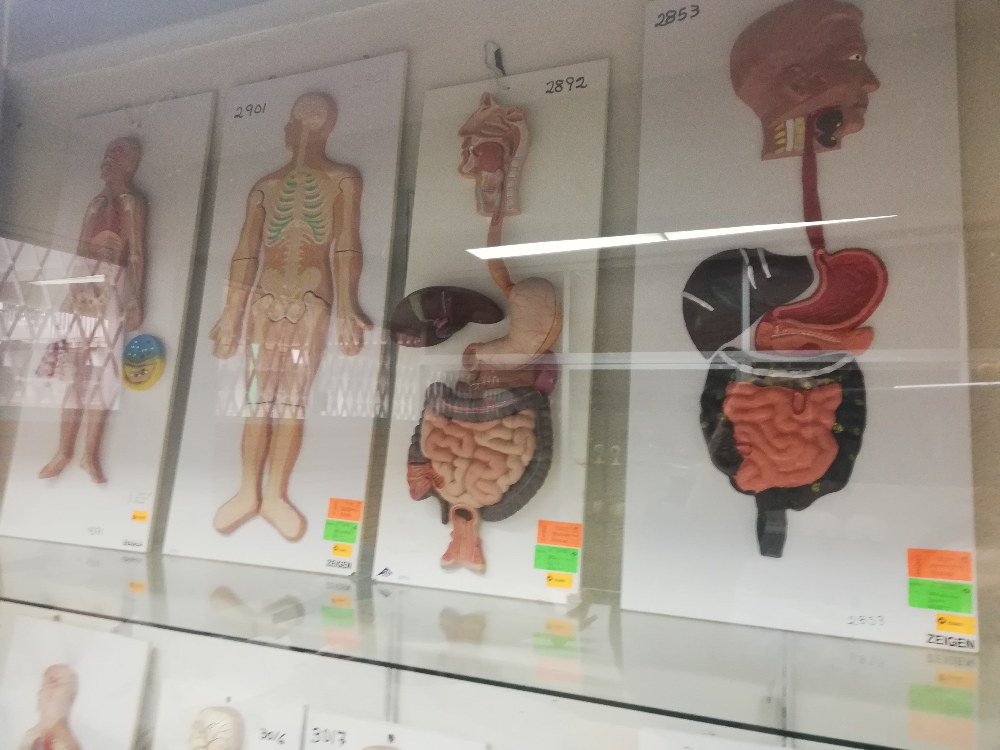
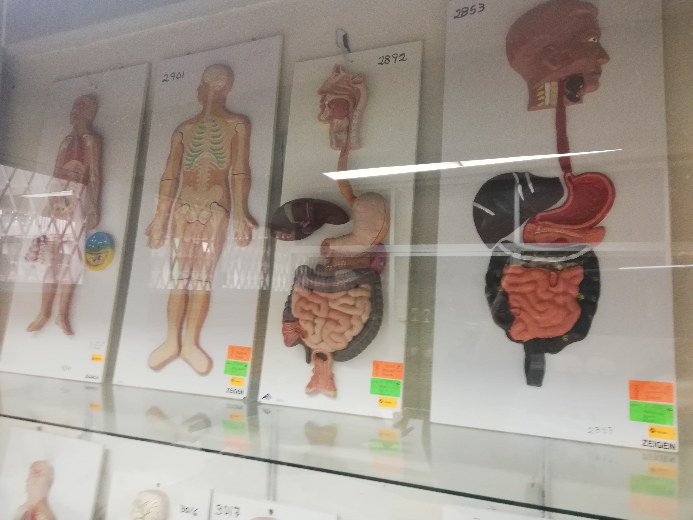

En Conalep 153 Teziutlán, podrás estudiar una carrera profesional técnica y además el bachillerato, el tiempo lo definira sólo tu carrera, actualmente contamos con 3 carreras que son: Informática, Enfermería y Contabilidad.
Al egresar desempeñarás funciones técnico operativas inherentes al desarrollo e implementación de soluciones de tecnologías de información basadas en la autorización, organización, codificación, recuperación la información y optimización de recursos informáticos a fin de impulsar la competitividad, las buenas prácticas y toma de decisiones en organizaciones o empresas de cualquier ámbito.


Al egresador proporcionarás cuidados de enfermería tanto en el medio hospitalario como extra-hospitalario, con un enfoque integral y personalizado, basado en principios éticos, legales, cientificos y humanisticos, tomando como referencia el proceso salud-enfermedad, el ciclo de vida y el proceso de atención de enfermería que en conjunto, sustenten un modelo de atención pertinente y de calidad que contribuya a la prevención y solución de problemas de salud de la persona.
 


Al egresar elaborarás documentación administrativa, mercantil y contable empleando la normatividad legal vigente. Realizarás los procedimientos contables relacionados con las obligaciones fiscales; controlarás los ingresos y egresos financieros mediante el registro contable de los mismos.